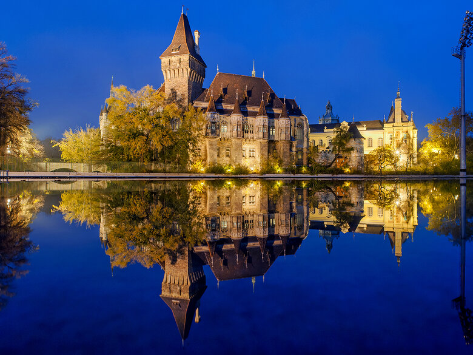
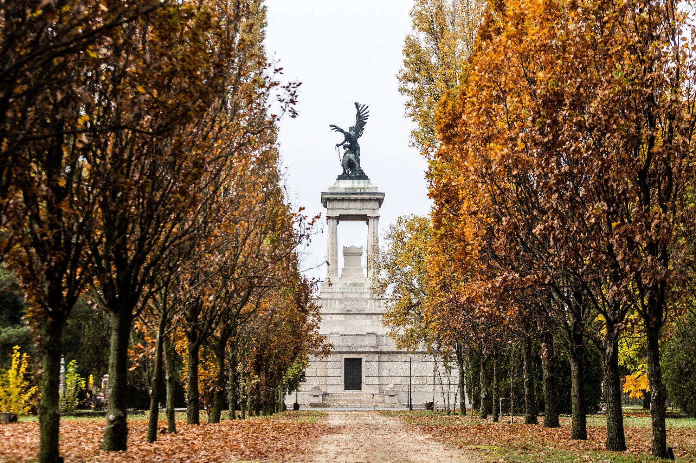
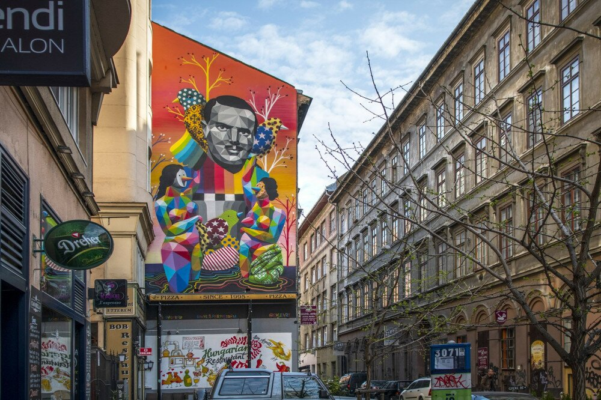
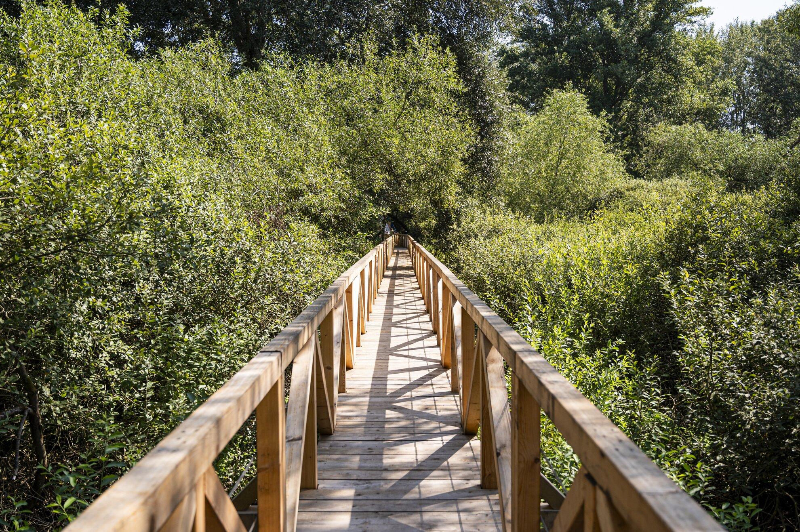

Vajdahunyad vára
Az „első” Vajdahunyad vára(1896 –1899) A Hunyadi-család vajdahunyadi várkastélya a 19. században már a magyar nemzet építészeti ereklyéjévé vált. Az 1896-os millenniumi ünnepségek, a honfoglalás emlékére készítették el mását, a Történelmi főcsoport részeként felépített épületegyüttes gótikus elemét, a Vajdahunyad várát Budapesten. A magyar építészet ezeréves történetét „három dimenzióban” kívánták bemutatni. A 21 részes Történelmi Épületcsoportot Alpár Ignác tervei alapján, a szoros határidő és a költségek miatt főleg fából építették fel 1896-ra. 1896. október 31-én a millenniumi kiállítás bezárt, az alkalmilag felállított pavilonok elbontása megkezdődött. Ez a sors várt volna a Vajdahunyad várára is, azonban a nagyközönség tiltakozására az Országos Magyar Gazdasági Egyesület kezdeményezte az épület megtartását (a már a kiállítás tartama alatt, 1896. június 20-án megalapított) új Magyar Mezőgazdasági Múzeum céljára. Darányi Ignác földművelésügyi miniszter leiratát figyelembe véve a múzeum a millenniumi mezőgazdasági kiállítás tárgyi anyagát használt fel, ugyanakkor egyéb adományokkal is bővültek a gyűjtemények még 1896 során. A főváros vezetése is engedett a kérésnek, és 1897. szeptember 12-én a vár ismét megnyitotta kapuit a látogatók előtt, immár mint a Magyar királyi Mezőgazdasági Múzeum. Az épület azonban a gyenge alapanyagok miatt hamarosan életveszélyessé vált, és 1899. július 27-én be is kellett zárni. Az „első” Vajdahunyad várát még abban az évben elbontották. A „második” Vajdahunyad vára (1908–) A bontást követően a múzeum a Kerepesi (mai Rákóczi) út 72.-be költözött. Ugyanakkor több művész, muzeológus, a Vallás- és Közoktatásügyi Minisztérium, és Darányi a vár második megépítését szorgalmazta. Kezdeményezésük sikerrel járt, és Alpár tervei szerint 1902-ben megindult ismét az építkezés. 1904-re elkészült a gótikus és a reneszánsz-barokk épületszárny, 1908-ra pedig a román stílusú épületegyüttes. A múzeum 1904-ben a román épület átépítése előtt visszaköltözött az épületbe, és 1907. június 9-én nem kisebb személyiség, mint I. Ferenc József magyar király nyitotta meg a múzeum kiállításait a nagyközönség előtt.
Margitszigeti Kisállatkert
A Margitsziget középső részén egy 5200 m²-es kisállatkertet találunk, ahol hazánkban is őshonos vízi- és ragadozó madarakat, szarvasokat, nyulakat és pónikat tekinthetnek meg a látogatók. A kívülről egész évben, belülről csak a nyári szezonban látogatható parkban jó időben pónilovagoltatás is van. A Margitsziget középső területén található az a Kisállatkert, ami az 1950-es években nyitotta meg kapuit. A korábban leromlott állapotú kertről 2002 óta a Fővárosi Állat- és Növénykert gondoskodik, abban az évben fel is újították a közel 5200 m²-es kertet. A gyakran vadaskertként emlegetett állatbemutató parkban hazánkban őshonos állatokkal ismerkedhetnek meg a látogatók. A terület egyik felét a dámvadak kifutója uralja, itt szarvasfélék és mezei nyulak kaptak helyet, felidézve az egykori Nyulak szigetének elvadult hangulatát. A kisállatkert másik felét vízimadarak és egyéb, Magyarországon a természetben is megtalálható madárfajok lakják. Kisebb kifutókban pedig olyan baglyok, sasok és egyéb ragadó madarak kaptak helyet, amelyek sérülten kerültek az állatkertbe. Ezeknek a madaraknak az életét sikerült megmenteniük a gondozóknak, ám emberi segítség nélkül már nem lennének képesek a természetben életben maradni. A díjmentesen látogatható kisállatkert belsejében pónilovak számára kialakított istállót találunk. Az itt lakó pónikon szép időben akár lovagolni is lehet, ez azonban már fizetős szórakozás. A lovagoltatás nyári szünet előtt és után csak hétvégén, a nyári szünet idején minden nap igénybe vehető. Mivel a kisállatkert kifutóin csak kerítés van, de a szigeten belül nincsen különhatárolt területen, így a látogatók az év minden napján kívülről körüljárhatják a kertet. A területen belül kialakított sétányok azonban csak meghatározott nyitvatartási időben látogathatók. Nyitvatartási időben büfé is üzemel a kisállatkert oldalában. Nyitvatartás naponta: 10:00 - 18:00
Fiumei úti sírkert
2003. augusztus 14-én 6000 négyzetméteren égő avartűzhöz riasztották a tűzoltókat a Fiumei Úti Sírkertbe. A bozótos és néhány köbméter összehordott hulladék kapott lángra. 2005-ben indult útnak a kezdeményezés, hogy a Budapesti Temetkezési Intézet a Csend Napja c. kulturális fesztivált minden június egyik napsütéses vasárnapján megrendezze. A korábbi rendezvényeken felléptek többek között: Huzella Péter, a Kaláka együttes, Edvin Marton, Fassang László és St. Martin. A zenei programok mellett helyet kapnak grafikai- és fotókiállítások, valamint óránként temetői séták indulnak idegenvezetéssel. A sírkert növényritkaságainak köszönhetően rendhagyó biológiai tanóráknak is helyet ad: a legelső alkalommal 37 intézmény legalább 2000 diákja vett részt a programban. Kádár János és felesége, Tamáska Mária sírja (12-es parcella) 2007. május 2-ára virradóra Kádár János egykori kommunista politikus sírját ismeretlen tettesek megrongálták. Kádár és felesége síremlékének márvány fedlapját leemelték, a földet kihányták, a koporsót felfeszítették és elvitték Kádár csontjainak a medencecsonttól felfelé eső részét a koponyájával együtt és felesége urnáját, amely Kádár koporsóján volt elhelyezve. Feltételezhető, hogy a tettesek többen voltak: először eltávolították a fedlapot, amire a „gyilkosok 56” feliratot fújták rá, utána majdnem 2 méter mélyen kiásták a sírt. A fémkoporsóba a lábhoz közeli részen egy 30x30 centis lyukat vágtak. A koporsó valószínűleg ekkor telt meg földdel, ami nehezítette a csontok keresését. Az Munkásmozgalmi Panteonra vélhetően ugyanebben az időben, vagy a környékén feketével a következő feliratot festették: „Gyilkos és áruló szent földben nem nyughat. 1956-2006” A felfestett sor idézet a Kárpátia együttes Neveket akarok hallani c. számából. A sírrongálás és a felirat közti kapcsolatot a rendőrség vizsgálta. A parlamenti és parlamenten kívüli pártok is elítélték a kegyeletsértést. A rendőrség tízfős nyomozócsoportot hozott létre az ügyben. A nyomozás azonban eredménytelennek bizonyult, 2007. november 29-én a tettes(ek) kilétének megállapítása nélkül zárták le az ügyet. Az eset után Kádár sírjánál térfigyelő kamerákat állítottak fel, Hagyó Miklós főpolgármester-helyettes pedig bejelentette, hogy a Fiumei Úti Sírkertben szolgáló éjszakai biztonsági őrség létszámát jelentősen megnövelik. 2010. november 4-én a Politikai Foglyok Országos Szövetsége márványkeresztet állított a temetőben az 1956-os forradalom utcai harcai során elesettek emlékére. 2015 áprilisában ismeretlenek a 43-as parcellában 17 sírt megrongáltak, több márvány sírkövet ledöntöttek, illetve akadt, ahol a sír fedlapját is felszedték és gyújtogattak is. A megrongált síremlékek helyállítását a Budapesti Temetkezési Intézet Zrt. a Fiumei Úti Sírkert üzemeltetőjeként saját költségén vállalta. A Fiumei Úti Sírkertet 2013 decemberében az Országgyűlés a kulturális örökség védelméről szóló törvény módosításával nemzeti emlékhellyé nyilvánította, ezzel Magyarország 17 kiemelt helyszíne közé került. A temető fenntartója és vagyonkezelője 2016-tól a Nemzeti Örökség Intézete lett annak érdekében, hogy felbecsülhetetlen értékei megőrizhetőek legyenek, és továbbra is az emlékezés egyik legfontosabb hazai helyszíne maradhasson.
Tűzfalfestészet Budapesten
Tűzfalfestészet Budapesten A Színes Város Strongbow Budapest Fesztivál keretében belül megújuló Kazinczy utcai tűzfalak okán körülnéztünk, hogy mi a helyzet a nyugati világ egyre nagyobb szeletében teret hódító tűzfalfestés budapesti mezőnyében. Tartsatok ti is velünk túránk során! Szeretett, de kopott városunk málló-pergő homlokzatú utcaképei már évek óta folyamatos megújulás alatt vannak: egyszer itt újítanak fel egy házat, másszor meg amoda költözik be egy az omladozó utcafrontot saját előnyére fordító romkocsma. Az összkép vitathatatlanul kellemes, és a világért sem szeretnénk ha Budapest bármit is veszítene varázsából: az elmúlt zivataros évszázadok ehhez pedig ugyanannyit tettek hozzá, mint amennyit elvettek belőle. A legutóbbi világégés által a város szövetén ütött legtöbb seb már begyógyult, a nyavalyás foghíjtelkek azonban máig élő mementói a Budapestet érő bombázásoknak, és nyugodtan kijelenthetjük róluk, ezek tényleg semmit nem tesznek hozzá városunk hírnevének öregbítéséhez. Lehet persze várni arra, hogy majd jön egy beruházó, és betölti az űrt valami új építésű lakóházzal, de inkább örüljünk annak, hogy a 2011-ben indított TűzfalRehab keretén belül néhány lelkes és kreatív művészlélek kezébe vette az ecsetet, és már évek óta egyre több és több bérház magányosan álló falát dobják fel színes kreációikkal.
- Kőleves kert – Földanya | Budapest legújabb tűzfalfestménye a Kazinczy utcában már sorban a negyedik, 100 négyzetméteres felületével pedig az egyik legnagyobb is. Alkotópárosa egyenesen Romániából érkezett a Színes Város Csoport meghívására. Az eredetileg építész Obie Platon 2000-ben kezdett el street-arttal foglalkozni (aki másodmagával együtt készítette a falfestményt), ma már bonyolult, elgondolkodtató munkákat alkot a festészetben és a szobrászatban egyaránt. Elsősorban Platón, a filozófus, illetve a román kultúra, a társadalom, a geometria és a filozófia inspirálja. Idővel kialakult öt eltérő stílusú karakter, amelyeket előszeretettel használ fel a rajzaiban, ezek az öt platóni formának felelnek meg: a tetraéder, a hexaéder, az oktaéder, a dodekaéder és az ikozaéder. A karakterek neve: Allan Dalla, Madame Mezzanine, Pop Prince, Qrip Tic, Lost Letter (föld, levegő, tűz, víz, éter). A művész Kazinczy utcában található falfestménye a ,,Nagyváros vagy természet” ellentétpárt dolgozta fel, a színes Földanyát a merev szürke várossal ellentétben. A művész először járt Budapesten, ám alkotásában felsejlik például a Szabadság-szobor is. A tűzfalfestéseknek persze a dekoratív felület létrehozása mellett van még egy másik igen fontos funkciójuk is: történetesen a vászonként használt fal teljes felújítása és állagmegóvása. Ez a funkció a Kőleves kerti fal esetében teljesen érvényre is jutott: ez ugyanis a második olyan tűzfal, amely teljes körű hőszigeteléssel újult meg. – Kiemelten fontos számunkra, hogy egy tűzfalra ne csak fessünk, vagy vakoljunk, hanem egy itthon eddig nem alkalmazott módszerrel hosszú távú megoldást is kínáljunk arra, hogy miként lehet egy tűzfalat ténylegesen megóvni – mondta el Flór Péter, a Színes Város főtitkára. Az első ilyen felület Budapesten a fesztivál második helyszíne volt a Dob u. 38-ban, amely augusztus 15-e óta látható.
- Kertész utca 27 – Mi a magyar? | A Liter kocsmával szemközti hatalmas falfelület már lassan egy hónapja folyamatos tárgya az előtte elkattanó fényképezőknek és mobiltelefonoknak, pedig előtte az ember inkább rá se nézett a több mint 400 négyzetméteres felületű, piszkos-barna színű téglafalra. Augusztus elején azonban a Színes Város csoport pályázatot írt ki, „Mi a magyar?” címmel, amire mindenkitől várták a non-figuratív grafikákat. Végül Orosz Richárdé és munkájáé lett a dicsőség, a csoport pedig tartotta az alku rájuk eső részét, és fel is festették a nyertes művet, amelyen sétáló Rubik-kockától kezdve a honfoglaló magyarság saját tükörképét bámuló íjáig számos hungarikumot megtalálunk. Kép helyett nézzétek meg, hogyan készült el a Dob utca dísze!
- Kazinczy-Király sarok | A két bohém utca sarkán, a legendás Wichmann kocsmától néhány méterre található a város egyik legvidámabb játszótere – pedig hát a környék nem éppen minősíthető gyerekbarát negyednek. A környék pár évvel ezelőtti feltámadásáig a játszótér helyén egy ormótlan foghíjtelek szívta magába a „Budapest világváros” nézetet valló járó-kelők optimizmusát, de aztán hirtelen kinőtt a földből ez a kicsi, néhány hintával és egy mászókával felszerelt park, majd pedig a Suppré-Neopaint csapatainak közreműködésével egy teljesen új, felszabadultabb arcot, a légballonokkal az Óz, a nagy varázsló hangulatát megidéző képet kapott az egész sarok. Azóta már a gyerekek is nagyobb kedvvel hagyják ott a tv-t.
- Akácfa utca 27 – Chill vagy tombolás? | Egyenesen Lengyelországból érkezett Lukas Berger, alias Cekas, hogy az Akácfa utca egyik kiugró tűzfalát a környék színvilágát figyelembe véve, „Chill vagy tombolás?” címet viselő grafikájával, össz-viszz 8 óra leforgása alatt kidekorálja. A 80 négyzetméteres falfelülethez Cekas mindössze 20 liter kültéri falfestéket használt fel.
- Kazinczy utca 27 – Romlás virágai | A budapesti Kertész utcában található parkoló 156 m2 nagyságú tűzfalára 3 művész 5 nap alatt festette fel a ,,Romlás virágai” című alkotást. A fesztiválon megfestett tűzfalak mindegyike valamilyen ellentétpárt dolgoz fel, így ez a ,,Nagyváros, vagy természet” dilemmát értelmezte sajátosan. A Fat Heat művésznéven ismert Kirsch Ádám, és a Mr. Zero ként alkotó Viszokai Krisztián nemzetközileg a legismertebb magyar falfestők, akik művészetük segítségével a fél világot bejárták, ugyanis rengeteg fesztiválra hívják őket nagyméretű falakat megfesteni évek óta. A gyakran párban dolgozó duót ezúttal kiegészítette ObieOne, alias Egry Tamás. Egry a Moholy Nagy Művészeti Egyetem (MOME) fotó szakán diplomázott, de grafikával is régóta foglalkozik.
Ismerj meg többet:
Teknős tanösvény
Dunakeszi összezsugorodott tőzeglápjának mélyére vezet a Teknős tanösvény, amely pallósétányával és egyedi élményelemeivel, valamint építészeti megoldásaival önmagában is vonzó attrakció az egyébként is érdekes lápi környezetben. A Teknős tanösvény állomásai Az áruházi parkoló szélén, egy füves placcon emeletes fatákolmány jelzi a a Teknős tanösvény indítópontját. A tanösvény java azonban csak hátrébb, a fák között rejtőző csatorna túloldalán kezdődik, hiszen ez határolja el a tőzeglápot. Odáig padokként és deszkajárdaként is használható pallóelemek mutatják az irányt a fűben, és a parton léphetünk be a láperdőbe. A hídon átkelve még rövid erdei séta áll előttünk, mielőtt elérjük a valódi attrakciót, a 900 m hosszú tanösvény pallósorát. A Teknős tanösvény különlegessége, hogy kialakítói az ismeretterjesztéshez szimpla táblák helyett trükkösebb, izgalmasabb megoldásokat alkalmaztak. Klasszikus állomások helyett például kisebb infópontok és nagyobb, játékos ismeretszerzésre sarkalló „pavilonok” sorakoznak az útvonalon. Utóbbiakból négyet találunk: a javasolt haladási irány szerinti első „pajta" a dunakeszi tőzegláp történetét, társulásait, lakóit mutatja be egyetlen nagy, informatív dekorációként. A második egy kiágazó sétányszakasz kapuja a padlóján kötélhíddal, a harmadik pedig élményelemként és fizikai értelemben is az útvonal csúcspontja: gyerekek számára kényelmesre döntött mászófal és lépcső is felvezet a teraszára, ahonnan a lápi tóra nézhetünk le. Az utolsó építmény egy kötélmászóka madármegfigyelésre kialakítva – és ha esetleg madarat nem is látnánk, legalább a gyerekek elfoglalhatják magukat a köteleken csimpaszkodva. Ezeken kívül rövid szövegekkel ellátott, kis fémtárcsák sorakoznak a korlátokon. Képek nincsenek rajtuk, az illusztrációt a hátterükben megfigyelhető valóság „rajzolja", így a tanösvény állomásai egységet képeznek közvetlen környezetükkel. Megismerhetjük például a tőzegláp különböző fejlődési fázisban lévő foltjait, amiknek eltérő mikroklímaviszonyaira hő- és páratartalom-mérővel ellátott oszlopok hívják fel a figyelmet. De a láp élőlényeiről és társulásairól is sok rövid, könnyen fogyasztható, mégis érdekes információt szerezhetünk. A kiágazás végén épített mászófalas fordulóponthoz kis sziget is tartozik, ahol jó eséllyel figyelhetjük meg hazánk egyetlen őshonos teknősfaját, a mocsári teknőst. A pallósor kialakítása és környezete A tervek szerint a pallósétányt idővel részben befonják a futónövények, így csak a tornyok tűnnek majd ki a lápi környezet zöldjéből. A pavilonokat egyébként kékre, a természetben legritkábban előforduló színűre festették, de megjelenésében minden más elem is izgalmas és játékos. A pallósétányon kívüli részen deszkapallóelemeket fektettek a talajra, amik jól néznek ki, és mutatják az utat, viszont mivel nem érnek össze, sáros-vizes időszakban nem sokra megyünk velük. Hogy miként keletkezik a tőzegláp, mi a szerepe a klímaváltozás elleni harcban, és milyen élőlények lakják a dunakeszi lápfoltot, ezt mind megtudhatjuk a kihelyezett infópontokról sok egyéb érdekesség mellett. De a Teknős tanösvényt már csak építészeti megoldásai és izgalmas kialakítása miatt is érdemes felkeresni. Az apró dunakeszi láp nagy részét már megsemmisítették a terület beépítése során, és a máig megmaradt folt védettsége és megmaradása is kérdésessé vált a 2000-es évek végén. A megépült tanösvénynek ezért fontos funkciója, hogy megismertesse a közönséggel ezt az értékes élőhelyet, ezáltal biztosítva hosszútávú fennmaradását. A szerző tippjei: A tanösvény babakocsival is járható, de a pallósétány két végén kis lépcsők találhatók, az azon kívüli részeken pedig esetenként sárral kell megküzdeni. Az útvonal nagyrészt napnak kitett területen vezet, így nyári hőségben erre kell készülni. Nyitvatartás naponta: 00:00 - 24:00